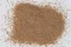

|
|
(For further information on spectroscopy, see:
http://speclab.cr.usgs.gov)
TITLE: Monazite HS255 DESCRIPT
DOCUMENTATION_FORMAT: MINERAL
SAMPLE_ID: HS255
MINERAL_TYPE: Phosphate
MINERAL: Monazite
FORMULA: (Ce,La,Nd,Th)PO4
FORMULA_HTML: (Ce,La,Nd,Th)PO4
COLLECTION_LOCALITY: Miguel County, New Mexico
ORIGINAL_DONOR: Hunt and Salisbury Collection
CURRENT_SAMPLE_LOCATION: USGS Denver Spectroscopy Laboratory
ULTIMATE_SAMPLE_LOCATION: USGS Denver Spectroscopy Laboratory
SAMPLE_DESCRIPTION:
Original spectrum published in: Hunt, G.R., J.W. Salisbury, and C.J. Lenhoff, 1972, Visible and near-infrared spectra of minerals and rocks: V. Halides, phosphates, arsenates, vanadates and borates. Modern Geology, v. 3, p. 121-132.
With the following notes: "Monazite, (Ce, La, Y, Th)PO4, is a phosphate of the rare earth metals usually found as a comparatively rare accessory mineral in granitic rocks and pegmatites. Because of its resistance to weathering and high specific gravity, it is also found concentrated in some beach sands."
"This sample is complicated not only by this multitudinous possibility for substitution, but also because there appears to be considerable apatite present as a contaminant."
"From the spectrum it would appear that at least some hydroxyl apatite and molecular water must be present. The bands at 0.55, 0.68, 0.75, 0.81, and 0.88µm are all due to electronic transitions in the divalent lanthanum ion. The two smaller peaks at 0.68 and 0.88µm spanning the intense doublet at 0.75 and 0.81 are evident in the flame emission spectrum of lanthanum, and are perceptible in spectrum [Apatite HS253]. The features occurring between 1 and 2µm indicate the presence of both molecular water and hydroxyl groups. This contention is supported by the mid-infrared spectrum of this sample which displays a very broad and intense band throughout the OH fundamental stretching region and a much weaker band at 1630cm-1, indicating the presence of molecular water. The bands near 1.0 and 1.2 microns are surprisingly well resolved and are probably due to combinations of various hydroxyl stretching modes, together with contributions from the overtone of the water bending mode combining with the stretching mode. The three bands between 1.4 and 1.6µm indicates that there are probably several different OH groups present in very different environments. This sample is obviously far from pure monazite and the assignment of these vibrational overtone and combination tones is very tentative. Mass spectrographic analyses of this sample showed that the lanthanum to Ce ratio is 0.4, and that other rare earths were present in 1 to 10% quantities. It is possible that some contribution from these rare earth ions could be affecting the spectrum between 1 and 2 microns."
Note: Nd3+ and Sm3+ are the source of the narrow absorption features, not lanthanum as described above.
IMAGE_OF_SAMPLE:

END_SAMPLE_DESCRIPTION.
XRD_ANALYSIS:
40 kV - 30 mA, 6.5-9.5 keV
File: monaz255.out, -.mdi
Reference: JCPDS #32-199
Found: monazite
Sought but not found: quartz, alkali feldspars
Comment: Peaks only moderately strong and sharp. Not as well crystallized as the zircon (WS-522). Quartz << 1% could be obscured by monazite reflections.
J.S.Huebner, J. Pickrell, T. Schaefer, written communication 1994
END_XRD_ANALYSIS.
COMPOSITIONAL_ANALYSIS_TYPE: None # XRF, EM(WDS), ICP(Trace), WChem
COMPOSITION_TRACE:
COMPOSITION_DISCUSSION:
None.
END_COMPOSITION_DISCUSSION.
MICROSCOPIC_EXAMINATION:
END_MICROSCOPIC_EXAMINATION.
SPECTROSCOPIC_DISCUSSION:
END_SPECTROSCOPIC_DISCUSSION.
SPECTRAL_PURITY: 1c2b3b4b # 1= 0.2-3, 2= 1.5-6, 3= 6-25, 4= 20-150 microns
| LIB_SPECTRA_HED: | where | Wave Range | Av_Rs_Pwr | Comment |
|---|---|---|---|---|
| LIB_SPECTRA: | splib04a r 3100 | 0.2-3.0µm | 200 | g.s.= |
| LIB_SPECTRA: | splib05a r 4486 | 0.2-3.0µm | 200 | g.s.= |
| LIB_SPECTRA: | splib06a r 14212 | g.s.= | ||
| LIB_SPECTRA: | splib06a r 14225 | g.s.= |
{kind=link}